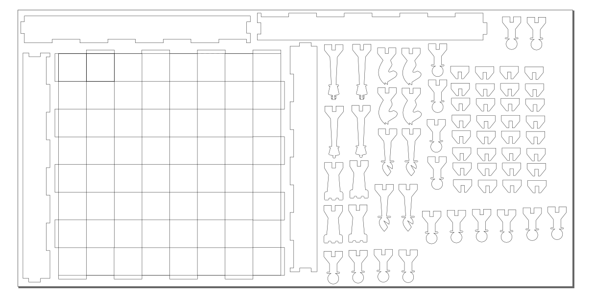

Verkefni 2 var skipt í 2 hluta. Það átti að hanna hlut sem hægt væri að skera út með lazerskera og síðan var líka hópverkefni þar sem átti að mæla kerf lazerskerans. Hægt var að velja um 3 mismunandi efni við gerð hlutarins. 4x600x300mm krossviðar- eða akrílplötur eða 1000x700mm pappaplötur. Hluturinn þurfti að vera geirnegldur (press-fit), módelið sem var teiknað þurfti að vera parametrískt og einnig þurfti að gera ráð fyrir kerfi lazerskerans.
Fyrsta skrefið var að mæla kerf lazerkserans. Það má lesa allt um það ferli hér. Þegar því var lokið fór ég að hanna hlutinn sem ég vildi gera. Ég ákvað að gera taflborð og taflmenn. Ég ætlaði að nota lazerinn til þess að dekkja svörtu reitina á borðinu. Ég hugsaði um að hafa göt í reitunum til þess að hægt væri að festa leikmennina á því en hætti við það því mér fannst það skemma útlitið á borðinu. Ég ákvað að hafa hliðar á borðinu til þess að hafa einhverja hæð á því. Ég ákvað að hafa fjóra “fingur” á hverjum enda borðsins sem hliðarnar pössuðu við, líkt og púsluspil.
Þegar ég var kominn með grófa hugmynd af því hvernig ég vildi hafa borðið var komið að því að teikna það. Ég ákvað að nota fusion 360 til þess. Ég gat náð í námsmannaútgáfu af því frítt gegn því að senda mynd af stúdentaskírteininu mínu. Ég ákvað að hafa fjóra parametra í teikningunni. Einn fyrir hæð borðsins, einn fyrir stærð hvers reitar, einn fyrir þykkt viðarins og einn fyrir kerf lazerskerans. Í fyrstu gekk mjög illa að fá parametrana til þess að virka rétt. Þegar þeim var breytt virtist borðið alltaf verpast á einhvern furðulegan máta og sama hvað ég fiktaði með skorður og lengdir á línunum þá virtist ekkert virka. Ég sá að margir voru að lenda í svipuðu veseni á netinu en fann enga almennilega lausn á vandamálinu. Ég ákvað að eyða teikningunni og byrja upp á nýtt. Í þetta skiptið ákvað ég að teikna rétthyrninga gróflega í réttri stærð í stað lína til að teikna borðið og setti allar skorður og lengdir inn eftir á. Þetta myndband hjálpaði mér helling varðandi uppsetningu og fleira. Þegar þeirri teikningu var lokið þá virkuðu parametrarnir fullkomlega.

Þá var komið að því að hanna og teikna taflmennina. Ég leitaði á netinu að skáksettum sem væru gerð með lazerskera til þess að fá hugmyndir. Ég rakst á þetta sett og fannst taflmennirnir flottir og ákvað að byggja mína hönnun á þessum. Ég lét allar stærðir vera hlutfall af reitnum til þess að hægt væri að skala taflmennina með borðinu en fann því miður enga aðferð til þess að gera riddarann og biskupinn fullkomlega parametríska þar sem þeir innihéldu spline-línur.

Þegar ég hafði klárað að teikna allt og var orðinn sáttur með útlitið á öllu þá fór ég í gegnum allar teikningar og breytti öllum parametrum þannig að gert væri ráð fyrir kerfinu. Það tók frekar langan tíma og mig grunar að það séu til betri leiðir en ég fann enga betri í fljótu bragði.
Nú var komið að því að exporta sem DXF skrá. Ég notaðist við sömu aðferð og í þessu myndbandi hér. Fyrsta skrefið var að koma öllum íhlutum á sama plan. Að vísu var ég bara með einn stand og eitt stykki af hverjum taflmanni en mér fannst óþarfi að hafa fleiri parta en nauðsynlegt var og ætlaði frekar að copy paste-a þá í inkscape eftirá. Þar næst voru útlínur allra parta settar saman í eina teikningu með hjálp project skipunarinnar. Síðan exportaði ég teikninguna sem DXF. Allt virtist ganga vel þar til ég opnaði DXF skrána í Inkscape og allar spline-línurnar voru horfnar. Ég leitaði á netinu að lausnum við þessu vandamáli og sá að margir voru í svipuðum vandræðum en aftur fann ég enga lausn sem virkaði.
Eftir að hafa lesið svo gott sem allt internetið komst ég að því að þetta er bara vandamál í Fusion sem er ekki búið að leysa. Eina leiðin er að vinna sig í kringum þetta með milliforriti og fusion plugins. Fyrst náði ég í þetta plugin hér sem leyfði mér að vista teikningar sem DXF þar sem spline voru orðin polyline. Síðan downloadaði ég Qcad sem gat opnað þessa DXF skrá og vistaði aftur sem R15[dxflib] skrá sem ég gat síðan loksins opnað í inkscape.
Þegar ég var loksins kominn með skrána í inkscape þá teiknaði ég reitina á taflborðið. Ég gerði það með því að teikna rétthyrninga og nota fill skipunina á þá (a.t.h. að reitirnir sjást ekki á mynd hér að neðan þar sem ég hef breytt display mode yfir í outline til þess að línur sjáist betur). Síðan breytti ég línuþykktunum á þeim línum sem ég vildi að lazerinn skæri í 0,018mm og vistaði síðan sem PDF skjal og notaði object size í stað canvas size.

Þá gat ég einfaldlega farið með þessa PDF skrá yfir tölvuna sem sér um lazerskerann og stillt prentarann rétt í samræmi við leiðbeiningar sem eru gefnar í prentherbergi og byrjað að skera. Prentunin gekk vel að mestu leiti en ég þurfti þó að prenta annan kónginn aftur þar sem lazerinn skar ekki alveg í gegnum plötuna í fyrra skiptið.

Borðið kom mjög vel út í heildina litið. Ég er sáttur með útlitið og hliðarnar smellpössuðu á borðið. Nú á bara eftir að bera olíu á svörtu leikmennina til þess að dekkja þá aðeins. Borðið var þó ekki alveg fullkomið því ekki allir taflmennirnir náðu að haldast við botninn án líms. Mig grunar að það sé vegna þess að platan sem ég fékk var töluvert verpt. Það sést kannski best á því að borðið vaggar þegar það liggur á láréttum fleti. Ef ég þyrfti að gera verkefnið aftur þá myndi ég nota aðra aðferð við að gera ráð fyrir kerfinu. Ég komst að því eftir á að auðveldara er að offseta öllum línum um hálft kerf þegar búið er að projecta öllum íhlutum á sama sketchinn. Þá þarf bara að eyða út innri línunum í inkscape og teikningin er tilbúin í prentun.